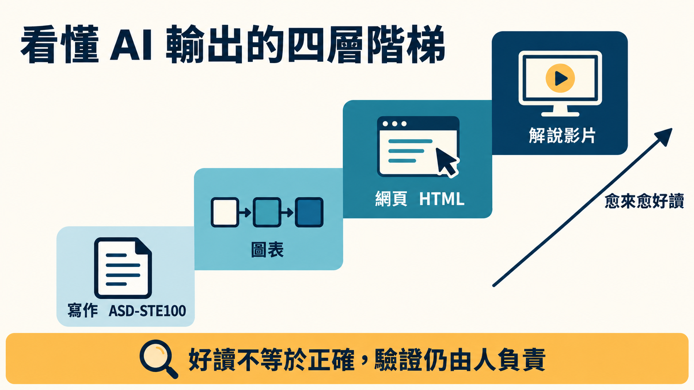

2025 年 6 月，Karpathy 在 Y Combinator 的演講裡，描述了每個用過 coding agent 的人都有感的場面：AI 一次丟來一個一萬行的 diff。他說這對他沒有用，因為「I'm still the bottleneck」，一萬行瞬間就出來了，但他還是得確認裡面沒有引進 bug、做的是對的事、沒有資安問題。
同一段演講裡，他把分工講得很簡單：AI 通常負責產出，人負責驗證。他給了兩個方向：想辦法讓驗證變快，以及把 AI 拴著（keep the AI on the leash），一次只收小改動。
一年多之後，他在 X 上發了一則貼文，談的是怎麼理解 LLM 的輸出。貼文沒有提到那場演講。把兩者並排來看，是本文的讀法。
貼文講了什麼
2026 年 10 月 2 日，他發了一則不短的貼文，開頭一句是：「We'll be spending a lot more time trying to understand the outputs of language models.」（我們會花愈來愈多時間，去理解語言模型的輸出。）接下來是一個四層的階梯，每一層都用「But even better」接到下一層。
第一層，寫作。 請 LLM 用 ASD-STE100 解釋事情。這是原本為航太維修文件制定的受控語言，他說 LLM 對它很熟，而它對文字風格的嚴格限制，常常讓他覺得「a lot more readable」。他有時也會調低標準，要求「80% of the way to ASD-STE100」，因為規範本身相當嚴苛。
第二層，圖表。 不要寫，改成請 LLM 做圖。他認為圖「can be a lot easier to process, parse, and understand」。
第三層，網頁。 要求輸出「in HTML」，得到有互動、有動畫的頁面。他說 LLM 的前端能力愈來愈好。
第四層，解說影片。 這是他最看好的形式：針對任意主題的客製影片。他給的範例指令是「Create a 3b1b style video explainer on X. Use my ElevenLabs API key for audio narration」，並補了一句：「This is actually starting to work!」

貼文最後的總結有兩點。其一，LLM 會愈來愈自主地包辦（原文 legwork）大部分的實際工作，人的工作會「rise up the abstractions」，上移到監督與理解。其二，既然智慧與程式碼愈來愈充裕，就可以要求 LLM 做出「large, custom, discardable software artifacts」，也就是大型、客製、用完即丟的軟體產物，例如網頁應用或解說影片，這些東西過去根本不值得做。
截至 2026-10-07 擷取時，這則貼文有約 5.4 萬個讚、約 754 萬次觀看。
為什麼第一層是一份航空維修規範
ASD-STE100 的來歷，官方網站講得很具體。
它起於 1970 年代末。歐洲航空公司（當時的 AEA）在 1979 年找上歐洲航太工業協會 AECMA，原因是各家製造商的維修手冊雖然都用英文，寫法卻差很多，而這些航空公司裡有八成不來自英語系國家。目標是讓英語只有基本程度的讀者也能看懂維修文件，因為官方自己的說法是：複雜的技術指令可能被誤解，而誤解可能導致事故。第一版 AECMA Simplified English Guide 在 1986 年發布。2005 年它成為國際規格，2025 年 1 月 15 日發布的 Issue 9 則把它升格為國際標準（官網首頁）。
這套標準分兩部分：53 條寫作規則，分成 9 大類，管文法與文風；一本受控字典，收約 900 個核准字，一般而言每個字只有一個詞性、一個意思，另外列約 1,200 個不核准的字，附替代字（About STE）。
Karpathy 看上的，應該是這種為了「讀錯一個字會出事」而磨出來的紀律。不過他自己也說規範太嚴，所以才有「80%」這個折衷。規範全文需向官方填表申請，各項字數與句數上限本文沒有引用。
把兩次發言放在一起
2025 年的演講裡有一句話：「Reading text is effortful and it's not fun, but looking at stuff is fun」，看圖像像是一條「highway to your brain」，他認為 GUI 這類視覺化介面對審查系統很有用。
以下是本文的對照，貼文本身沒有這樣寫：把這句話放到 2026 年的階梯旁邊，第二、三層可以讀成它的延伸：把文字換成圖，把靜態圖換成可以點、可以跳過已懂部分的網頁。第四層更進一步，把閱讀改成聽與看。第一層則留在文字裡，只是把文字磨到比較不容易讀錯。
至於「用完即丟」這個論點，貼文發出當天就有人整理成〈Karpathy's Case for Discardable Software〉（FourWeekMBA）。這篇文章自己註明，它只描述 Karpathy 的論點，沒有數據、沒有預測，也沒有測試貼文裡「模型熟悉 STE」這一點。
好讀，不等於正確
2025 年演講的核心問題，是人怎麼確認 AI 做的東西是對的；2026 年貼文談的是怎麼讀得懂。這兩件事不一定同方向。
貼文本身沒有談這個落差。能拿來對照的，是 ASD-STE100 的維護單位。STEMG 在 2026 年 6 月（文件自署日期）發表了一份三頁的白皮書，題目是 ASD-STE100 與人工智慧。官方下載頁對它的摘要，寫得很直接：AI 產生的文字「can appear clear, authoritative, and consistent with STE, even when it does not correctly apply the rules and vocabulary of the standard」，並且「Plausibility must not be confused with verified compliance」。白皮書的結論是 AI 可以輔助技術作者，但取代不了人的監督，遇到衝突時，標準本身優先。白皮書也提到，用 AI 自動檢查 STE 合規，目前準確度不一。
要留意範圍：這份白皮書談的是 AI 寫的 STE 文件，只涵蓋貼文的第一層，沒有討論圖、網頁或影片，也不是在回應 Karpathy。把它延伸到後面三層，是本文的類推：輸出看起來愈完整，愈需要另外一道驗證。
近一週也有評論做了類似的延伸（gu-log，頁面署名由 AI 撰寫）：最好懂的格式和最好監督的格式不一定是同一個。它的建議是，想快速建立直覺就往上爬；要下判斷或署名負責時，退回第一層，請模型用 80% STE 把關鍵主張一條一條寫出來，再逐句檢查。這是該評論的建議，不是 Karpathy 的主張。
貼文附的那張圖，剛好可以當一個小例子。那是一張工程圖紙風格的 STE 總覽圖，貼文沒說明來源。一篇在貼文後兩天發表、自稱做過查證的文章（max.nardit.com）指出，這張圖的字典條目有幾處和 Issue 9 對不上，例如圖中把 approximately 標成不核准，而該文說標準是核准的。這是單一來源的說法，本文沒有取得規範全文可以核對，所以不採用圖中的任何字典內容。
實際用起來
下面是本文的整理，每一條都標了依據：
- 想快速抓到陌生主題的輪廓：請 LLM 做圖，或要求輸出成 HTML。依據是貼文對這兩層的描述（圖較容易處理與理解、HTML 可以做出互動頁面）。
- 想讓長篇說明更容易讀：照貼文的說法，要求「80% of the way to ASD-STE100」。這靠的是 LLM 對規範的熟悉度，而官方白皮書說，AI 自動檢查 STE 合規目前準確度不一，所以把它當成風格約束，不要當成合規保證。
- 要拿結果去做決定、發布或寫進程式：對照原始資料，必要時照上一節 gu-log 的做法退回第一層。這一條的依據是白皮書的人為監督原則，貼文沒有這樣說。
支持「受控語言有用」的研究是有的，但範圍有限。1996 年 Chervak、Drury 與 Ouellette 對 175 位飛機維修技師做的研究發現，使用簡化英文後理解度明顯提升，在較難的工卡以及非母語者身上尤其明顯。那是人在讀人寫的維修工卡，和人在讀 LLM 產生的各種輸出不同，只能當方向性的佐證。
關於第四層的影片，貼文的原話是「starting to work」，沒有說已經可靠。
回到那一萬行
一萬行 diff 的問題沒有因為這則貼文消失。現在多了幾個把輸出變好讀的辦法，同時也多了一個問題：當 AI 給你一支十分鐘、配音流暢的影片，你要怎麼知道它講的是對的？
來源
主要來源
- Andrej Karpathy，X 貼文，2026-10-02：https://x.com/karpathy/status/2105819303471976479
- Andrej Karpathy，Software Is Changing (Again)，Y Combinator AI Startup School，2025 年 6 月：https://www.youtube.com/watch?v=LCEmiRjPEtQ
ASD-STE100 官方來源
- ASD-STE100 官方網站（STEMG）：https://www.asd-ste100.org/
- About STE（沿革、53 條規則、約 900／約 1,200 字、Issue 9）：https://www.asd-ste100.org/about_STE.html
- FAQ（1979 年起因）：https://www.asd-ste100.org/STE_faq.html
- Downloads（白皮書摘要、Issue 9 申請）：https://www.asd-ste100.org/STE_downloads.html
- STEMG White Paper: ASD-STE100 Simplified Technical English and Artificial Intelligence（2026 年 6 月，文件自署）：https://www.asd-ste100.org/assets/files/WhitePaper-ASD-STE100_and_AI.pdf
研究
- Chervak, S., Drury, C. G., & Ouellette, J. P. (1996). Simplified English for aircraft workcards. Proceedings of the Human Factors and Ergonomics Society 40th Annual Meeting：https://researchconnect.buffalo.edu/en/publications/simplified-english-for-aircraft-workcards/
近一週的相關評論（佐證與對照，皆為二手；日期為網站自報，gu-log 為網址日期）
- FourWeekMBA，Karpathy's Case for Discardable Software，2026-10-02：https://fourweekmba.com/ai-karpathy-discardable-software-artifacts/
- gu-log，Can't Keep Up With AI Output?，2026-10-02（網址日期；頁面署名由 AI 撰寫）：https://gu-log.vercel.app/en/posts/en-mp-317-20261002-karpathy-llm-output-format-ladder/
- max.nardit.com，Karpathy on understanding LLM outputs…fact-checked，2026-10-04：https://max.nardit.com/articles/karpathy-understanding-llm-outputs